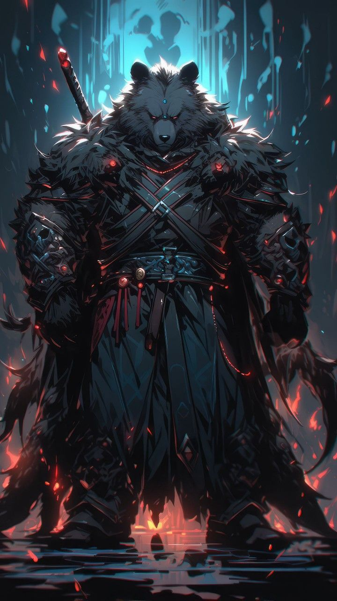

Usari
Stats:
HP: 980
MP: 0
PHY STR: 19
PHY DEF: 25
MG STR: 0
MG DEF: 0

Usari Skills:
- Bear Hug (Offensive) (Level 0): The Usari embraces a single target, dealing 200 DMG and having a 25% chance to apply a Low-Tier Stunned
status effect.
- Pack Charge (Offensive) (Level 5): The Usari and its kin charge at a single target simultaneously, dealing 400 DMG each. If the attack hits, the user gains a 20% PHY DEF boost for 3 turns. (Can only be used twice per battle).
- Savage Swipe (Offensive) (Level 15): The Usari unleashes a mighty swipe of its claws, dealing 300 DMG to a single target and having a 50% chance to apply a Low-Tier Stunned
status effect. (Can only be used twice per battle).
- Earthquake Stomp (Offensive) (Level 25): The Usari stamps its feet, dealing 1000 DMG to all enemies in a radius and having a 30% chance to apply a Low-Tier Stunned
status effect.
- Bear's Fury (Offensive) (Level 35): The Usari enters a state of primal, unstoppable fury, increasing its PHY ATK by 60% and its PHY DEF by 40% for 3 turns. While enraged, the Usari's skills have a 30% chance to deal an additional 200 DMG (Can only be used once per battle).
- Alpha's Roar (Offensive) (Level 45): The Usari unleashes a earth-shattering roar, dealing 800 DMG to all enemies and having a 80% chance to apply a Mid-Tier Stunned status effect for 3 turns, reducing the target's PHY DEF by 30%.
- Unyielding Might (Offensive) (Level 65): The Usari channels its inner bear strength, increasing its PHY ATK by 70% and its PHY DEF by 50% for 2 turns. While active, the Usari's skills have a 35% chance to deal an additional 500 DMG (Can only be used once per battle).
- Pack's Endurance (Offensive) (Level 70): The Usari marks a target with the Target status effect for 5 turns. The target also has a 40% chance to suffer a High-Tier Stunned
status effect (Can only be used three times per battle).
- Bear's Fortitude (Offensive) (Level 80): The Usari withstands incoming attacks, gaining a 100% boost to PHY DEF for 4 turns. While active, the Usari also reflects 50% of the damage taken back at the attacker (Can only be used twice per battle).
- Alpha's Unyielding Wrath (Offensive) (Level 100): The Usari unleashes the full might of its alpha power, dealing 1500 DMG to all enemies. Enemies afflicted by the effect take a 50% damage increase from all sources. (Can only be used once per battle)